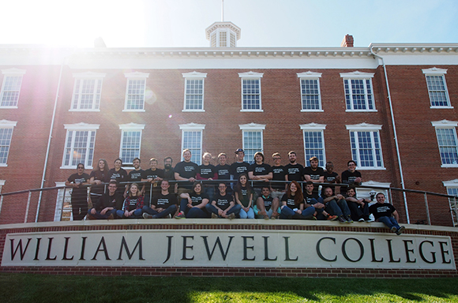
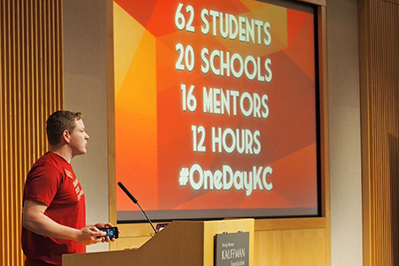
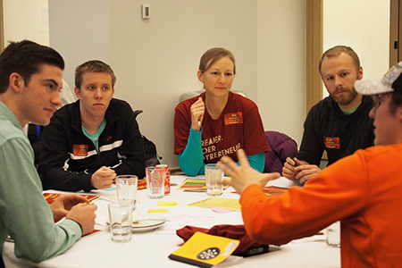
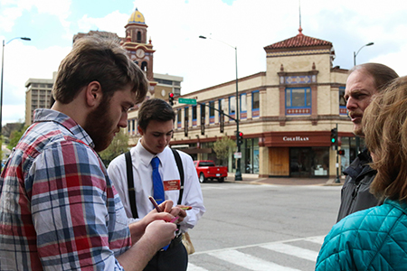
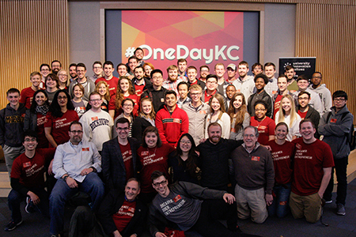
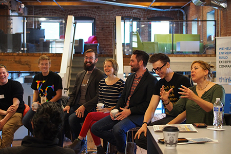
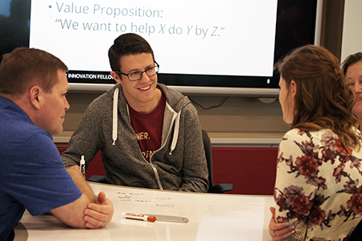

At the William Jewell College Regional Meetup, University Innovation Fellows took part in a city-wide event to help Kansas City become a smart and sustainable city.

When six student teams pitched their business ideas on a Friday evening in early April, it was hard to believe that they’d met only 12 hours earlier. This process of forming teams around ideas and pitching products in such a short time period is the purpose behind #OneDayKC, a student-run event hosted by higher education institutions in Kansas City, MO.
This year, the event was combined with a University Innovation Fellows regional meetup hosted by William Jewell College. Fellows traveled from seven states to join Kansas City students and community members for #OneDayKC. They spent the second day visiting Kansas City coworking and accelerator spaces, connecting with higher education and business leaders, and engaging with prospective first-year students at William Jewell.
On Friday, April 1, 60 total participants including Fellows and students from 18 different high schools, colleges and universities arrived at the Kauffman Foundation for #OneDayKC. The event was run by students from three schools: William Jewell Fellows Bradley Dice, Trevor Nicks, Macy Tush, Alex Holden and Ben Shinogle; Rockhurst Fellows Michael Brummett and Mike Frazzetta; and University of Missouri - Kansas City (UMKC) student Tin Ho.

#OneDayKC provided an opportunity for participants to connect with leaders and peers in the community to work on projects to help Kansas City become a smart and sustainable city. Participants were challenged to spend twelve hours forming a team, developing a product or service needed in the Kansas City area, and pitching that product or service to the whole group and a panel of judges at the end of the day.
"#OneDayKC builds community between students, local entrepreneurs, and our city,” said William Jewell Fellow Bradley Dice. “Through this event, we want our next generation of startup founders, product designers, urban planners, and community advocates to meet one another, develop an entrepreneurial mindset, and share a framework for innovation in Kansas City."
The day kicked off with inspirational talks from thought leaders who are working toward recreating Kansas City into a “smart” and more sustainable place. Bob Bennett, the Chief Innovation Officer of Kansas City, spoke about his role in finding new ways to solve complex city problems, and Butch Rigby, owner of Screenland Theaters, discussed sustainable urban development. Leticia Britos Cavagnaro, the co-leader of the University Innovation Fellows program, led participants through a design thinking exercise, and Landon Young, Director of Creativity and Innovation at William Jewell College and co-founder of donateequity.com, shared details on the Lean Startup methodology. Attendees also heard personal stories of change in higher education from Humera Fasihuddin, co-leader of the University Innovation Fellows program, as well as several Fellows and student hosts of the event.

The participants then formed teams around topics including energy and sustainability, transit and traffic, municipal services, health and well-being, education and workforce development, and culture and recreation. They spent the rest of the morning and early afternoon brainstorming on pain points that they could address and on experiments that would test their hypotheses.
In the afternoon, teams visited the Country Club Plaza shopping district of Kansas City, where they conducted interviews with shoppers and pedestrians to gather feedback about their ideas.

“From this, I learned the importance of empathizing with the customer and getting their perspectives,” said Asya Sergoyan, a University Innovation Fellow from the Colorado School of Mines. “We often think we know best. But then we go out into the community and talk to people and learn new things about their needs.”
Armed with the user insights, the participants worked to refine their ideas and pitches. That evening, the teams pitched their ideas at Rockhurst University to participants, invited guests and judges Frank Jurden of VML and TEDxKC, Tom Gerend of KC Streetcar, Humera Fasihuddin, and Dr. David Sallee, president of William Jewell College.
There was a tie for first place: winners were Empower U and Village Education, two projects that focused, respectively, on community education and matching students with mentors.

On Saturday, the University Innovation Fellows who attended #OneDayKC met for their own day of activities. In the morning, Fellows visited the ThinkBig coworking space to hear from a panel of local entrepreneurs and educators. Panelists were Risa Stein, professor of psychology at Rockhurst University; Zach Pettet, UMKC ’15, co-founder of #OneDayKC, and employee at blooom; Landon Young; Ben Williams, Assistant Director of the Regnier Institute at UMKC; Andrea Essner of the Center of Entrepreneurial Ecosystem Development (C.E.E.D.); and Conner Hazelrigg, William Jewell College ’15, University Innovation Fellow, and founder of 17°73°.
Panel moderator Trevor Nicks asked the group how we can better prepare students in Kansas City, and around the country, to enter the entrepreneurial economy and compete at a global level. They discussed the importance of building community, promoting your achievements (even though it’s hard), asking for help (which is harder), making in-person rather than digital connections, helping others look good, using data to back up your activities, and forging alliances with faculty, administrators and community members that benefit both you and them.

“This has to be a grassroots movement,” said Risa Stein. “Students don’t realize how much power they have. Start communicating with your peers and help them speak the same language.”
After the panel, the group of Fellows toured the Sprint Accelerator with John Fein, Managing Director of the Sprint Accelerator. In this co-working space, Fellows learned about the dedication of a large global company to the innovation of a city. Sprint Accelerator is also the home of TechStars, a three-month, mentorship-driven startup accelerator that helps startups build the future of mobile technology.
Later that same day, Trevor Nicks and Macy Tush hosted a series of activities with prospective first-year William Jewell students, their parents, and Fellows. Nicks and Tush challenged the participants to create a business idea from combining a noun and an adjective supplied by the participants. For two of the three groups, the word “velociraptors” was chosen, which resulted in some animated pitches after the brainstorming finished. This activity gave the prospective students an opportunity to flex their brainstorming muscles, and gave visiting Fellows a look into how William Jewell Fellows are applying their design thinking and creativity skills.

The meetup concluded with a debrief of the day, a discussion of William Jewell’s #uifresh activities, and a group photo at the college’s iconic sign.
“I grew up in Kansas City, but the #OneDayKC event was the first chance I had to see the city as an adult, and I was blown away,” said Alex Bina, a Fellow at Clemson University. “As a newly minted UIF, I continue to be amazed at how innovation drives economic development. It was a frantic weekend full of fun and progress.”
Related articles and media:
Article: https://medium.com/@trevornicks/higher-ed-local-business-preparing-students-for-the-entrepreneurial-economy-in-kansas-city-cd35695f2020#.ovrjqhdu4
Article: http://hilltopmonitor.com/onedaykc-innovates/
Video: https://www.youtube.com/watch?v=TMM8bz4ITDM&feature=youtu.be&a
Photo gallery: https://www.flickr.com/photos/epicenterusa/sets/72157666091606354